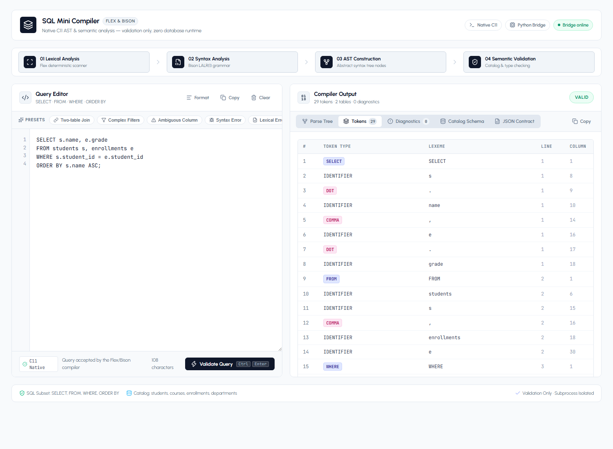
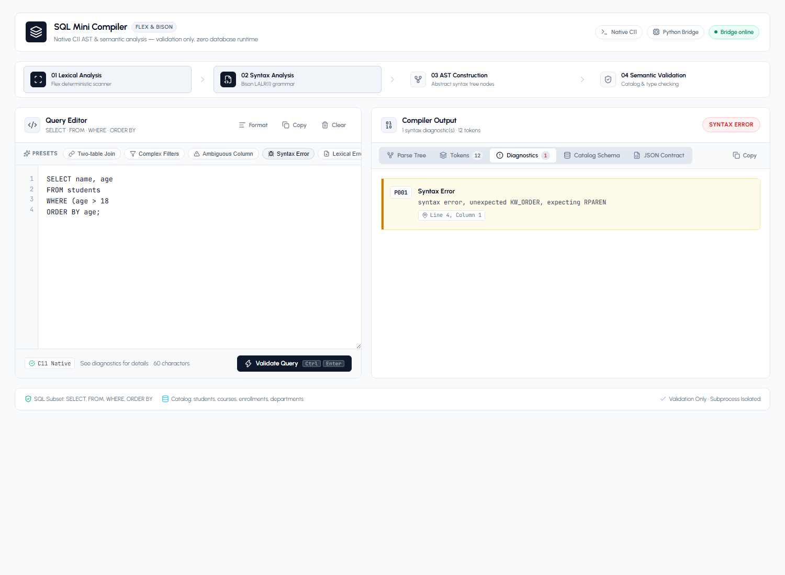
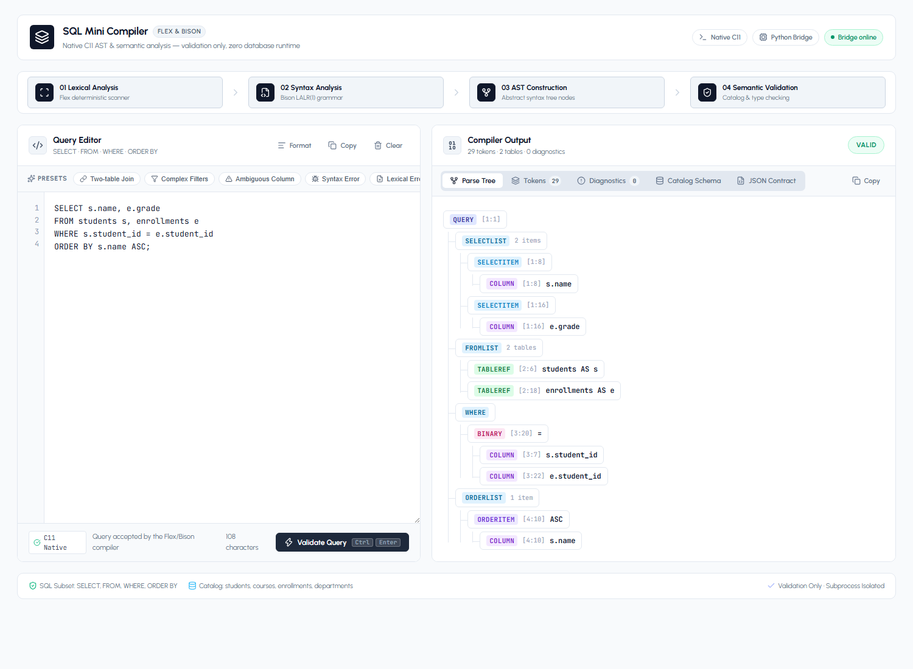
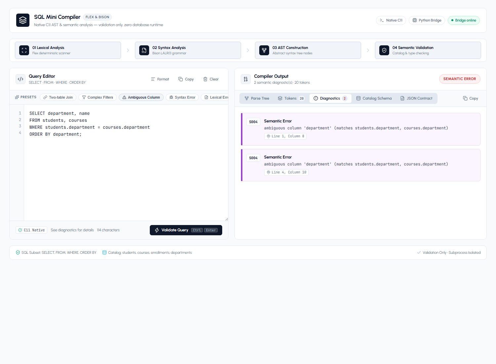
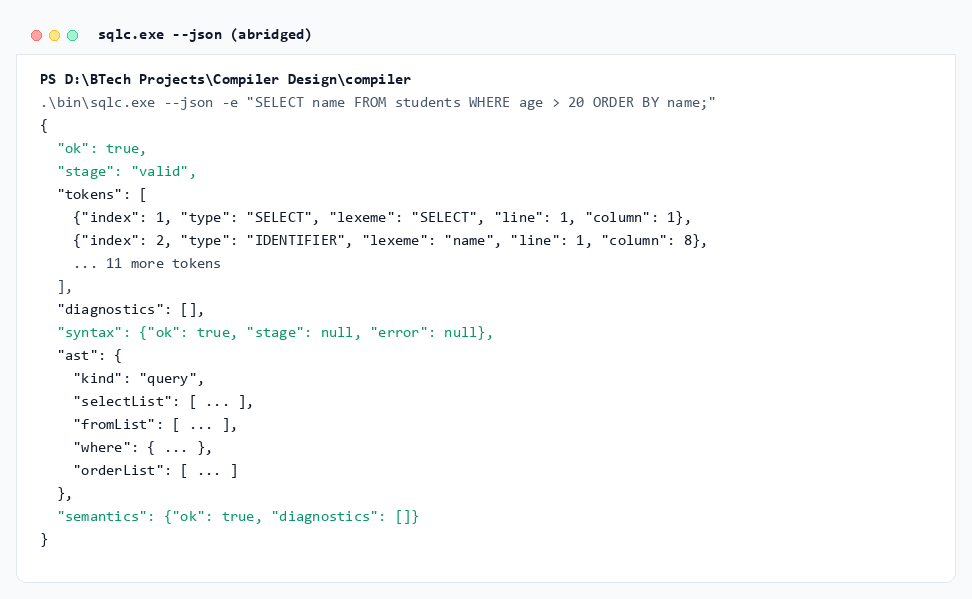
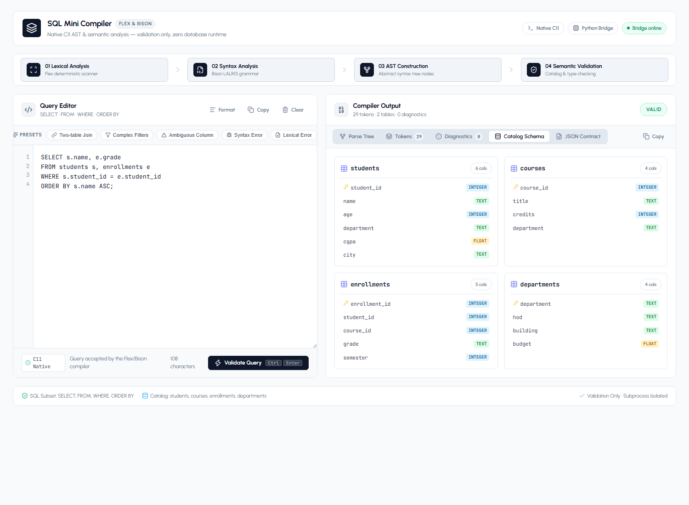
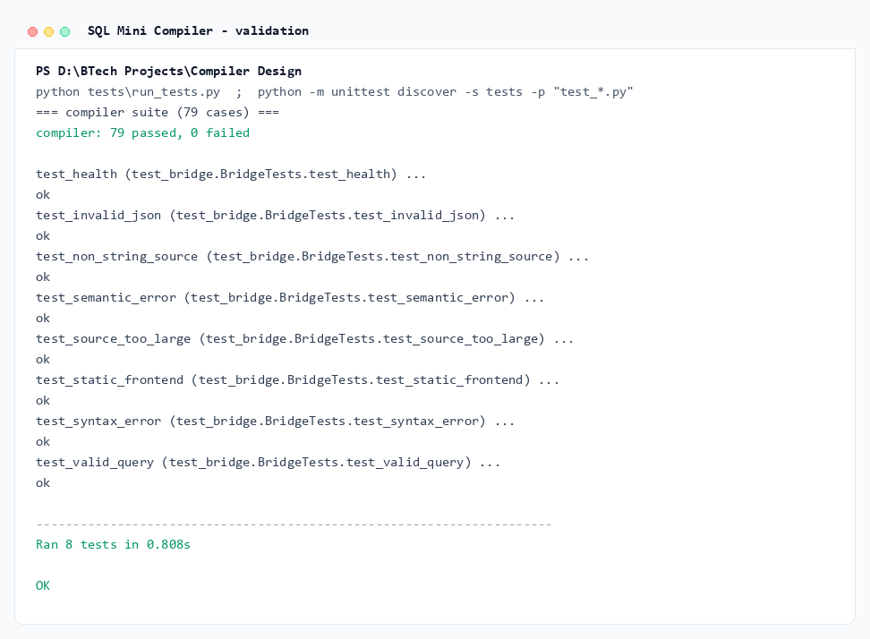

SQL Mini
Compiler
Single-Engine Native Front-End for SQL Validation
An end-to-end SQL analysis pipeline featuring a Flex scanner, Bison LALR(1) grammar, AST synthesis, and catalog-aware semantic verification in native C11 with an isolated Python bridge.
SELECT s.name AS student_name,
c.title, e.grade
FROM students s,
enrollments e,
courses c
WHERE s.student_id = e.student_id
AND e.course_id = c.course_id
AND s.cgpa >= 7.5
ORDER BY s.cgpa DESC, s.name;
Why Build a Dedicated SQL Front-End?
SQL is declarative; query validation is a rigorous compiler problem.
-
Syntax vs Semantics: A query can be syntactically immaculate yet completely invalid (e.g. unknown table, ambiguous column, type mismatch).
-
Phase Transparency: Demonstrates each compiler phase in full visibility: deterministic lexing, shift-reduce parsing, AST generation, and catalog resolution.
-
Scope & Ambiguity: Table aliasing and multi-table queries create complex scoping rules requiring robust symbol tables.
-
Single Source of Truth: Eliminates dummy regex or duplicate parser mockups in the web tier.
"How to keep a web demo 100% honest when the compiler is in native C?"
Answer: One native C11 binary. The Python bridge only shuttles stdin/stdout.
Deliberate & Rigorous Language Boundaries
Small enough to formally verify; rich enough to exercise complete compiler phases.
SELECT [DISTINCT]with star projection, expressions, and aliases.FROMclause with 1+ tables and explicit table aliases.WHEREwithAND,OR,NOT, arithmetic, comparisons.- Predicates:
LIKE,IN (...),BETWEEN ... AND,IS [NOT] NULL. ORDER BYwith select aliases, column references, ordinals,ASC/DESC.- 4-table catalog schema (students, courses, enrollments, departments).
- DML/DDL:
INSERT,UPDATE,DELETE,CREATE TABLE. - Complex joins:
JOIN ... ON, subqueries, CTEs. - Grouping & Aggregations:
GROUP BY,HAVING,SUM(),COUNT(). - Storage & Database Engine: No disk storage or physical execution.
- Remote database connections (JDBC, ODBC, sockets).
End-to-End System Architecture
Clean layer decoupling with bounded transport and subprocess isolation.
backend/server.py handles POST /api/analyze. Enforces 64KB & 5s subprocess limit.sqlc.exe --json executes Flex scanner, Bison parser, and catalog checks in under 5ms.{ "ok": true, "stage": "valid", "tokens": [...], "diagnostics": [], "syntax": {"ok": true}, "ast": {...}, "semantics": {"ok": true} }
Context-Free Grammar & Precedence Hierarchy
Precedence and associativity explicitly encoded directly into the grammar rules.
query
: SELECT [DISTINCT] select_list
FROM table_list
[WHERE expr]
[ORDER BY order_list] [';'] ;
select_item
: expr [AS alias]
| '*' ;
table_ref
: IDENTIFIER [AS alias] ;
order_item
: expr [ASC | DESC] ;
- 1
OR(Left-associative) - 2
AND(Left-associative) - 3
NOT(Unary prefix) - 4 Comparisons:
=,!=,<,<=,>,>=,LIKE,BETWEEN,IN - 5 Additive:
+,-(Left-associative) - 6 Multiplicative:
*,/(Left-associative) - 7 Unary:
+,- - 8 Primary: Column, Literal,
(expr)
Flex Deterministic Scanner & Token Recording
One token stream generated once by Flex, driving both parser and JSON output.
-
Case-Insensitive Keywords: Matches
SELECT,FROM,WHERE, etc., regardless of casing, but preserves identifier case. -
String Escaping: Handles SQL-standard doubled-quote escapes (e.g.
'O''Brien'). -
Multi-Format Comments: Ignores single-line
--,//, and block comments/* ... */. -
1-Based Tracking: Records accurate line and column positions for every single token.

Bison LALR(1) Parsing & Conflict Freedom
0 shift/reduce conflicts, 0 reduce/reduce conflicts, clean error recovery.
-
LALR(1) Parsing: Deterministic table-driven parser generated directly by GNU Bison.
-
Left-Recursion Elimination: Clauses and lists use left-recursion for bounded Bison stack memory.
-
Action Rules: Semantic action rules instantiate C AST nodes immediately during reductions.
-
Error Diagnostics: Emits
P001(unexpected token) andP002(expected specific token).

Strongly-Typed Abstract Syntax Tree
Hierarchical in-memory representation built during Bison semantic actions.
-
Query Node: Root container holding distinct flag, selectList, fromList, where clause, and orderList.
-
Expression Nodes: Discriminated unions for Literals, Column references, Binary operators, and Predicates.
-
Memory Arena: All nodes are allocated with clean ownership tracking and freed in one sweep.

Catalog Resolution & Type Checking
Multi-table scope, ambiguity detection, and strict operator typing.
S001: Unknown table, qualifier, or alias reference.S002: Duplicate table name or alias inFROMclause.S003: Unknown column referenced in select/where/order.S004: Ambiguous unqualified column matching multiple tables.S005: Type mismatch or illegal operator application.S006:WHEREcondition does not evaluate to boolean.S007: Duplicate alias in projection list.S008:ORDER BYordinal position out of range.

Native C11 Binary & Tooling CLI
Compiled with MinGW GCC into a standalone 120 KB native binary.
# Direct query compilation sqlc.exe -e "SELECT name FROM students;" # Token stream extraction sqlc.exe --tokens -e "SELECT name FROM students;" # Machine-readable JSON output sqlc.exe --json -e "SELECT name FROM students;" # Read from stdin Get-Content query.sql | sqlc.exe --json
0 (Valid), 1 (Lexical/Syntax Error), 2 (Semantic Error), 3 (I/O).

Lightweight & Secure Python HTTP Bridge
No third-party web frameworks; standard-library Python HTTP server.
Request body limited to 64 KiB. Source string capped at 60,000 chars. Invokes compiler via subprocess.run(shell=False) with stdin piping.
Strict 5.0-second execution timeout guard against runaway operations. Prevents DOS or memory exhaustion.
Bound locally to 127.0.0.1:8000. Provides /api/health endpoint to report compiler binary availability.
Modern Minimalist Web Interface
Shadcn UI light theme, Urbanist typography, and interactive exploration.
- Clean Light Mode: Minimalist slate palette, crisp 1px borders, zero drop shadows.
- Gutter Line Numbers: Synchronized line numbers aligned with compiler diagnostics.
- Clickable Diagnostics: Clicking an error alert jumps directly to that line in the editor.
- Interactive Schema: One-click insertion of table names and columns into the query.
- SQL Formatter: Built-in formatting and clipboard utilities.

Shared Test Suite & Integration Verification
79-case shared compiler test matrix across all 4 error and success categories.
- 30 Valid Queries: Projections, star expansion, aliases, filters, multi-table joins.
- 25 Semantic Error Cases: Unknown tables, ambiguous columns, duplicate aliases, bad types.
- 20 Syntax Error Cases: Malformed clauses, unclosed parentheses, missing tokens.
- 4 Lexical Error Cases: Unterminated literals, illegal characters, open block comments.

Empirical Results & Deliverables
100% test pass rate, sub-5ms compilation, zero parser duplication.
System Limitations & Expansion Roadmap
Clear technical boundaries with roadmap for complete SQL compatibility.
- Static hardcoded catalog without dynamic DDL updates.
- Absence of explicit
JOIN ... ONsyntactic sugar. - No subquery or CTE support in
FROMorWHERE.
- Query Planner: Logical query plan generation & relational algebra rewrite.
- Cost-Based Optimizer: Index selection and join reordering simulation.
- WASM Target: Direct compilation to WebAssembly for zero-latency client run.
Summary & Key Takeaways
A sound, fully-tested compiler front-end preserving architectural integrity.
- One Native Engine: Complete front-end written once in C11 with Flex and Bison.
- Defensive Isolation: Python bridge acts purely as transport, respecting timeout and size guards.
- User Experience: Modern light mode UI makes compiler internals intuitive and accessible.
Questions & Discussion